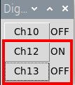
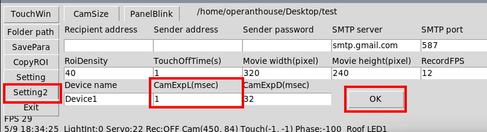
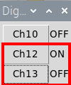

operanthouseのヘッダー
Kitaya lab
Handling of OperantHouse
This page explains how to use the OperantHouse by performing a spatial discrimination.
Prepare chamber with touch-screen setting.
Put animal bedding to a depth of 1 cm and food pellets.

Water Arm Setting
Place the tray all the way to the back.

Water Arm Setting
Once you have decided where to place the chamber, affix water arm mat in front of the chamber with double-sided tape. Make sure to face the cliff side to the chamber.

Connect the servo of the water arm and run OperantHouse software. Set the value of Ch3 Inside angle to "50" and press the "In" button.

Remove the water arm holder from servo and reattach with this angle.

Put the filled water bottle inside the holder and adjust the position of the water arm to locate the nozzle tip inside the slit like this.


Next step is determining of neutral angle. Find a middle angle value which places the nozzle tip as shown in the picture (Nozzle shouldn't be accessible from the mosue).


Set the outside angle. The length of noizes when moving to inside and outside from the neutral position should be same so outside angle value should be "6".
Make sure not to hit the water arm holder to the chamber at the outside angle.

Experimental Parameter Settings
Set the switching time between Light-phase and Dark phase and task start time in the setting.

If you wish to receive session results by email, enter your email address in the Recipient address field. Also fill in the Device name to distinguish between devices.
We have already prepared the SMTP server that allows you to send emails from the OperantHouse software, so you can test this function without setting up your own server, Howver, this account can be shared among all OperantHouse users. If you prefer to keep your experimental results confidential, we recommend setting up your own SMTP server. Instruction for establishing a private SMTP server are provided in the Tips section.

The second line is general task setting. Chenge them only when necessary.
RoiDensity: Spacing of detection points within the touch detection ROI. Lower values increase the density of detection points.
TouchOffTIme(s): Duration to inactivate touch detection ROIs. This function prohibits false detection immediately after changing of ceilling illumination.
Movie width/height: The resolution of video recording.
RecordFPS: Frame rate (frame/sec) of video recording. Higher frame rate increases the size of the video.

Create a folder for data storage and specify it with the "Folder path" button.

If the device has additional operation monitor, the dialog box can be shown in the touch-screen monitor. In that case, Right-click on "Choose Directory" tab in the taskbar and click "maximize" to display the dialog on the operation monitor.


Touch Panel Settings
Then start initial setting of the spatial discrimination task.
Click the "SpatialDisc" button.

Click "AdjustPanel" button.

If touch window is not displayed, click "TouchWin" button. You'll see a cross-hair. You can move it with Up/Rright/Left/Down buttons. The step can be altered by clicking "Coarse" and "FineMode" button.

Move the cross-hair to the upper-left position of the left panel while looking through the water supply slit. Then click "Set" button.

In the same way, set the right-bottom cordinate of the most left panel and click "Set" button.

The task needs 3 panels so chose "Yes" when you are asked to set the next panel. Then set the middle and right panels as well. After the setting of right panel, chose "No" to end this setting.

You can check the panel positions anytime by clicking "ShowPanel" button on the Servo window (Click again to hide them. Don't forget to hide them before actual task).

Camera Exposure Time Settings
Next, Let's adjust the camera's exposure time to adjust the brightness of the captured image. To make it easier towork, press CamSize button to enlarge the camera window (you can make it to the original size by press it again).

To switch illumination conditions to the light phase, click Ch12 and Ch13 to make the DigitalOut window look like as follow,

Now the illumination has switched to the light phase. If you feel the captured image is too bright or too dark, open the "Setting2" to adjust the exposure time.of the camera.

"Camera exposure Light" is an exposure time during the light phase, and "Camera exposure Dark" is an exposure time during the dark phase. Larger values will make the captured image brighter. Adjust the values of the CamExpL and click the "OK" button to reflect the change. Repeat this until the image appear as desired (you can also enter decimal values here).
Next do the same thing for the dark phase. Toggle the DigitalOut window as followed,

Now the chamber is illuminated with IR illumination. Open the "Setting2" and adjust the "CamExpD".
Nosepoke Detection Area Settings
Next, adjust nosepoke detection ROIs. Move ROIs to the appropriate positions as shown below (#0-2: above the mask hole bottom of left/center/right panel, #19 above water slit bottom).
Each ROI can be moved by clicking on its edge. Adjust its positions and click again to determine its new positions (it may be necessary to click the edge several time in remote desktop due to poor response).

Adjust the sensitivity of the ROI. The ROIs for panel touch detection (here, ROI #1 and #2) and the ROI for nose poke detection at the water access slit (ROI #19) may look similar, but their detection methods and sensitivity settings are different. Panel touch detection ROIs automatically adjusts their backgrounds if their position remains unchanged for 5 seconds.
The white dots of the ROI represent sampling points for pixel colors. If the mouse's body overlaps with these points, the software compares the changed in pixel color at the sampling point with the threshold set in A ("Dark" is the threshold without roof lighting, and "Light" is the threshold with roof lighting). If the changed exceeds the threshold, the point is considered as "hit". When the number of hits number surpasses the threshold number set in B, the ROI detects the nosepoke.
ROI #19 does not have such automatic background adjustment, as it needs to continuously detect water access during the complimentary water supply. Thus detection thresholdof ROI #19 must be assigned as a absolute pixel color (0:dark - 255:bright) rather than change in color as in nosepoke detection ROIs. If the mouse's color is black, increasing the threshold value makes it more sensitive to detecting the mouse's head. Typically, the optimal threshold is 30 units lower than the value caused false background detection.
If youwant activate specific ROI manually, click the "Test" button (D).

Task Parameter Settings
Next, set the task parameters. You can see the detailed information here.

Task parameters are not saved automatically. To save them, click "SavePara" or click "Start" button.

Put a mosue and click "Start" button. OperantHouse will automatically start the task at the time you have specified in the setting.

To make the background of the monitor black, hide the desktop icons beneath the touch window, and minimize all other windows of the Operant House.

At the end of the task, result files are saved to the designated folder and send email (if you did the setting). If no action is taken after that, the next task automatically start at the specified time.